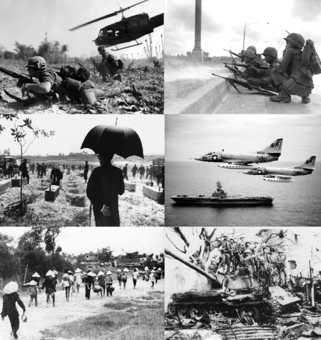

The Vietnam War

The Vietnam War (Vietnamese: Chiến tranh Việt Nam), also known as the Second Indochina War,[55] was a conflict in Vietnam, Laos, and Cambodia from 1 November 1955[A 1] to the fall of Saigon on 30 April 1975.[8] It was the second of the Indochina Wars and was officially fought between North Vietnam and South Vietnam. North Vietnam was supported by the Soviet Union, China,[12] and other communist allies; South Vietnam was supported by the United States, South Korea, the Philippines, Australia, Thailand, and other anti-communist allies.[56][57] The war, considered a Cold War-era proxy war by some,[58] lasted 19 years, with direct U.S. involvement ending in 1973, and included the Laotian Civil War and the Cambodian Civil War, which ended with all three countries becoming communist in 1975.
The conflict emerged from the First Indochina War between the French and the communist-led Viet Minh.[59][A 5] After the French quit attempted recolonization of Indochina in 1954, the US assumed financial and military support for the South Vietnamese state. The Việt Cộng, also known as Front national de libération du Sud-Viêt Nam or NLF (the National Liberation Front), a South Vietnamese common front under the direction of North Vietnam, initiated a guerrilla war in the south. North Vietnam had also invaded Laos in the mid-1950s in support of insurgents, establishing the Ho Chi Minh Trail to supply and reinforce the Việt Cộng.[60]:16 U.S. involvement escalated under President John F. Kennedy through the MAAG program, from just under a thousand military advisors in 1959 to 23,000 in 1964.[61][30]:131 By 1963, the North Vietnamese had sent 40,000 soldiers to fight in South Vietnam.[60]:16 In the Gulf of Tonkin incident in early August 1964, a U.S. destroyer was alleged to have clashed with North Vietnamese fast attack craft. In response, the U.S. Congress passed the Gulf of Tonkin Resolution and gave President Lyndon B. Johnson broad authority to increase American military presence in Vietnam. Johnson ordered the deployment of combat units for the first time and increased troop levels to 184,000.[61] The People's Army of Vietnam (PAVN) (also known as the North Vietnamese Army or NVA) engaged in more conventional warfare with U.S. and South Vietnamese forces. Despite little progress, the United States continued a significant build-up of forces. U.S. Secretary of Defense Robert McNamara, one of the principal architects of the war, began expressing doubts of victory by the end of 1966.[30]:287 U.S. and South Vietnam forces relied on air superiority and overwhelming firepower to conduct search and destroy operations, involving ground forces, artillery, and airstrikes. The U.S. also conducted a large-scale strategic bombing campaign against North Vietnam and Laos. North Vietnam was backed by the USSR and the People's Republic of China.[30]:371–4[62] With the VC and PAVN mounting large-scale offensives in the Tet Offensive throughout 1968, U.S. domestic support for the war began fading. The Army of the Republic of Vietnam (ARVN) expanded following a period of neglect after Tet and was modeled after U.S. doctrine. The VC sustained heavy losses during the Tet Offensive and subsequent U.S.-ARVN operations in the rest of 1968, losing over 50,000 men.[30]:481 The CIA's Phoenix Program further degraded the VC's membership and capabilities. By the end of the year, the VC insurgents held almost no territory in South Vietnam, and their recruitment dropped by over 80% in 1969, signifying a drastic reduction in guerrilla operations, necessitating increased use of PAVN regular soldiers from the north.[63] In 1969, North Vietnam declared a Provisional Revolutionary Government in South Vietnam in an attempt to give the reduced VC a more international stature, but the southern guerrillas from then on were sidelined as PAVN forces began more conventional combined arms warfare. By 1970, over 70% of communist troops in the south were northerners, and southern-dominated VC units no longer existed.[64] Operations crossed national borders: Laos was invaded by North Vietnam early on, while Cambodia was used by North Vietnam as a supply route starting in 1967; the route through Cambodia began to be bombed by the U.S. in 1969, while the Laos route had been heavily bombed since 1964. The deposing of the monarch Norodom Sihanouk by the Cambodian National Assembly resulted in a PAVN invasion of the country at the request of the Khmer Rouge, escalating the Cambodian Civil War and resulting in a U.S.-ARVN counter-invasion. In 1969, following the election of U.S. President Richard Nixon, a policy of "Vietnamization" began, which saw the conflict fought by an expanded ARVN, with U.S. forces sidelined and increasingly demoralized by domestic opposition and reduced recruitment. U.S. ground forces had largely withdrawn by early 1972 and support was limited to air support, artillery support, advisers, and materiel shipments. The ARVN, buttressed by said U.S. support, stopped the first and largest mechanized PAVN offensive during the Easter Offensive of 1972. The offensive resulted in heavy casualties on both sides and the failure of the PAVN to subdue South Vietnam, but the ARVN itself failed to recapture all territory, leaving its military situation difficult. The Paris Peace Accords of January 1973 saw all U.S. forces withdrawn; the Case–Church Amendment, passed by the U.S. Congress on 15 August 1973, officially ended direct U.S. military involvement.[65]:457 The Peace Accords were broken almost immediately, and fighting continued for two more years. Phnom Penh fell to the Khmer Rouge on 17 April 1975 while the 1975 Spring Offensive saw the capture of Saigon by the PAVN on 30 April; this marked the end of the war, and North and South Vietnam were reunified the following year. The scale of fighting was enormous. By 1970, the ARVN was the world's fourth largest army, and the PAVN was not far behind with approximately one million regular soldiers.[66][15]:770 The war exacted an enormous human cost: estimates of the number of Vietnamese soldiers and civilians killed range from 966,000[25] to 3.8 million.[51] Some 275,000–310,000 Cambodians,[52][53][54] 20,000–62,000 Laotians,[51] and 58,220 U.S. service members also died in the conflict, and a further 1,626 remain missing in action.[A 4]The Sino-Soviet split re-emerged following the lull during the Vietnam War. Conflict between North Vietnam and its Cambodian allies in the Royal Government of the National Union of Kampuchea, and the newly formed Democratic Kampuchea began almost immediately in a series of border raids by the Khmer Rouge, eventually escalating into the Cambodian–Vietnamese War. Chinese forces directly invaded Vietnam in the Sino-Vietnamese War, with subsequent border conflicts lasting until 1991. The unified Vietnam fought insurgencies in all three countries. The end of the war and resumption of the Third Indochina War would precipitate the Vietnamese boat people and the larger Indochina refugee crisis, which saw millions of refugees leave Indochina (mainly southern Vietnam), an estimated 250,000 of whom perished at sea. Within the U.S, the war gave rise to what was referred to as Vietnam Syndrome, a public aversion to American overseas military involvements,[67] which together with the Watergate scandal contributed to the crisis of confidence that affected America throughout the 1970s.[68]
Thiennguyen, 2021